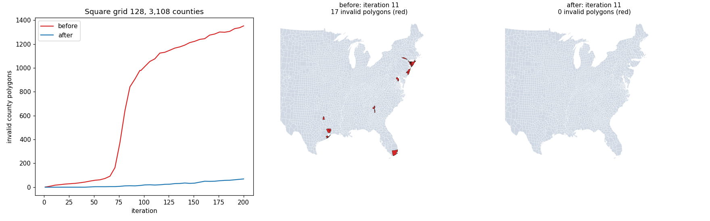

With square=True the cell size no longer equaled the spacing of the grid coordinates, so vertices were interpolated in the wrong cell and the displacement jumped at cell boundaries. On 3,108 counties at a square grid of 128 the invalid output polygons after 200 iterations fall from 1,350 to 70; other inputs have fewer invalid polygons in most cases and converge as before.
inv167d.py follows one invalid county (Suffolk, New York) through the first iteration. Two vertices 1.4 km apart on its boundary are displaced by 8.7 and 12.0 km in x, with a strain of 2.3, although the bilinear velocity field cannot change that fast over 1.4 km of a 68 km cell. The vertices sit on both sides of a cell boundary, and the location step puts one in the wrong cell: the grid has dx = 68,420 m but its coordinates are 68,159 m apart (Grid replaced dx by the average of the two directions and adjusted only the shorter side of the domain), so the interpolation weight of the second vertex is 1.33 instead of a value in [0, 1) and the extrapolated displacement differs by 3 km.
Stall rule off, 1,500 iterations. Values are before / after.
| input | grid | status (before / after) | iterations | mean error % | median error % | invalid polygons |
|---|---|---|---|---|---|---|
| states | 64 | converged / converged | 74 / 82 | 2.86 / 3.37 | 2.81 / 3.11 | 5 / 0 |
| states | 128 | converged / converged | 60 / 62 | 1.33 / 1.37 | 0.76 / 0.68 | 6 / 0 |
| states | 256 | converged / converged | 111 / 111 | 0.5 / 0.71 | 0.12 / 0.18 | 0 / 0 |
| states | 512 | converged / converged | 213 / 214 | 0.59 / 0.5 | 0.13 / 0.09 | 0 / 0 |
| districts | 128 | converged / converged | 119 / 130 | 0.83 / 0.61 | 0.52 / 0.36 | 113 / 25 |
| districts | 256 | converged / converged | 149 / 145 | 0.47 / 1.44 | 0.23 / 0.95 | 20 / 14 |
| districts | 512 | converged / converged | 261 / 263 | 0.41 / 0.43 | 0.15 / 0.19 | 22 / 16 |
| districts | 1024 | converged / converged | 510 / 511 | 0.54 / 0.63 | 0.29 / 0.35 | 12 / 14 |
| counties | 256 | completed / completed | 1500 / 1500 | 57.31 / 56.45 | 25.11 / 22.92 | 62 / 38 |
| counties | 512 | completed / completed | 1500 / 1500 | 12.78 / 12.56 | 0.72 / 1.39 | 374 / 191 |
| counties | 1024 | completed / completed | 1500 / 1500 | 2.27 / 3.16 | 0.02 / 0.03 | 159 / 154 |
Default options, ladder from the given grid for the given number of levels (each doubles the grid).
| ladder | status (before / after) | final-level iterations | mean error % | median error % | max error % | invalid polygons |
|---|---|---|---|---|---|---|
| states ladder 64x3 | converged / converged | 74 / 82 | 2.86 / 3.37 | 2.81 / 3.11 | 7.3 / 7.5 | 5 / 0 |
| districts ladder 128x3 | converged / converged | 123 / 134 | 0.76 / 0.88 | 0.51 / 0.75 | 8.3 / 8.4 | 48 / 15 |
| districts ladder 64x4 | converged / stalled | 98 / 50 | 1.12 / 1.83 | 0.67 / 0.53 | 9.6 / 30.4 | 109 / 196 |
| counties ladder 512x3 | stalled / stalled | 50 / 50 | 6.95 / 3.4 | 0.1 / 0.15 | 762.5 / 658.4 | 369 / 301 |
| counties ladder 256x4 | stalled / stalled | 60 / 80 | 2.19 / 4.19 | 0.12 / 0.09 | 295.9 / 645.7 | 611 / 321 |
| counties ladder 128x5 | stalled / stalled | 120 / 60 | 17.43 / 15.18 | 1.64 / 1.82 | 1894.7 / 4333.4 | 1311 / 378 |
The grid has sx by sy cells with sy truncated from h * size / w, so the cell size of the longer side, w / sx, is never larger than the one of the shorter side, h / sy. A square grid needs one cell size s with sx * s >= w and sy * s >= h; the smallest such s is max(w / sx, h / sy). The domain grows, centered, by less than one cell in each direction, and nothing of the margined bounds is cut off. The smaller value would cut the margin, and the average (the former choice) cannot be matched by a domain that keeps its extent in one direction.
Per level, before and after (grid fix and stall change combined; dist64.py):
| level | before | after |
|---|---|---|
| 64 | stalled, 110 it, mean 91.6 %, 23 invalid | stalled, 190 it, mean 32.0 %, 116 invalid |
| 128 | converged, 98 it, mean 1.12 %, 109 invalid | stalled, 130 it, mean 2.07 %, 195 invalid |
| 256 and 512 | not run (converged at 128) | stalled, 50 it each, 196 invalid |
At 64 cells 76 % of the districts are below one cell. Before the change the coarse level made little progress (91.6 % mean error after 110 iterations, the field jumping at cell boundaries), so level 128 started from nearly the original shapes and converged. After the change level 64 makes real progress (32.0 %) but into the sub-cell regime, with 116 invalid polygons, and the finer levels cannot repair them. So the change did not make the finer levels worse: it removed an accidental protection of a start that is too coarse. The same ladder from 128 (the start the resolution warning recommends) converges before and after (mean 0.76 % to 0.88 %, 48 to 15 invalid). The sub-cell damage of coarse levels is the subject of issue 167.

Counties on a square grid of 128 (stall rule off): the number of invalid polygons per iteration before and after the change, and the invalid counties (red) at iteration 11.